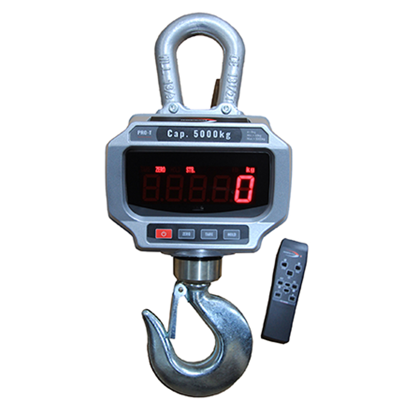
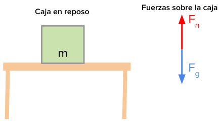

t= 300
x=1800m
v= ?
Utilizamos la formula del movimiento rectilinio unifrome que es x=v/t
Luego despejamos velocidad (v) ya que esta es la variable que nos piden hallar:
v=x/t
Y empezamos a reemplazar
v=1800m/300s
v=6 m/s
La velocidad a la que va la moto es a 6 m/s
t= 720s
x=1800m
v= ?
Como ya despejamos velocidad solo volvemos a reemplazar
v=x/t
v=1800m/720s
v=2.5 m/s
La velocidad a la que va la bicicleta es a 2.5 m/s
t= 360s
x=1800m
v= ?
Reemplazamos: v=x/t
v=1800m/360s
v=5 m/s
La velocidad a la que va el taxi es a 5 m/s
t= 900s
x=1800m
v= ?
Reemplazamos: v=x/t
v=1800m/900s
v=2 m/s
La velocidad a la que va el bus es a 2 m/s
t= 1980s
x=1800m
v= ?
Reemplazamos: v=x/t
v=1800m/1980s
v=0.90 m/s
La velocidad a la que vamos cuando caminamos es a 0.90 m/s
¿SABIAS ESTO DE FISICA?
// El dinamometro, es un resorte graduado que al deformarse nos permite ver cual es el valor de dicha fuerza

a. verdadero
b. falso
La respuesta correcta es a (verdadero)
Cuando la sumatoria de todas las fuerzas es 0
